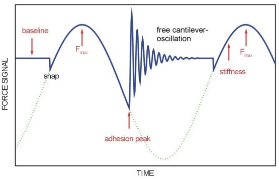

|
理论
|
数字脉冲力模式（DPFM）是一种非共振的中间接触模式，扩展了AFM的能力，超越了简单的形貌测量。它允许以高横向分辨率在正常扫描速度下获取额外的表面性质，如局部刚度和粘附力。它还避免了由于横向剪切力造成的表面损伤，并使用受控的法向力作为反馈信号。在这种成像模式中，alphaControl以用户可选择的频率在悬臂梁上引入正弦调制，幅度在10–500 nm之间。典型频率范围为1–10000 Hz，通常远低于悬臂梁的共振频率。信号的幅度被调整为使探针在每个周期内与样品接触和脱离。因此，每个周期内测量到如图1所示的完整脉冲力曲线。
图1所示的脉冲力曲线显示了与力-距离曲线相同的探针-样品相互作用特征。（通过使用距离信息而不是时间作为X轴，DPFM曲线实际上被转换为力-距离曲线。）在DPFM调制周期中，AFM探针最初远在样品表面上方。当移动到表面更近时，由于探针和样品表面之间的吸引力，探针突入接触。当压电将探针进一步推向样品时，排斥力达到最大值（Fmax）。然后压电回拉，因此排斥力减小，力信号从排斥变为吸引。最后，当悬臂梁上的力大于探针和样品之间的吸引力时，探针失去与表面的接触（粘附峰）。随后悬臂梁在基线周围的自由振荡被衰减。然后周期重新开始。

图1：具有正弦调制的示意性DPFM曲线。标出了感兴趣参数。
高速控制电子设备允许以5 MHz的速率对每条曲线进行数字化处理。AFM的力信号在图形窗口中监测，以类似示波器的模式呈现。通过这种方式，可以设置评估区域，从中提取力信号的不同特征并转换为图像。可在线处理的特征包括：
最大力
该值从每条脉冲力曲线中确定，并由alphaControl用作PI控制通道（参见WITec Control手册第3.4.5节）。因此，在DPFM操作中，作用在探针和样品之间的最大排斥力保持恒定。Fmax的值由设点值设置决定。扫描台为保持恒定Fmax而产生的上下运动被记录为表面形貌。
粘附力
最大粘附力由DPFM曲线的粘附峰确定。该信号形成样品的粘附力图像。
刚度
在脉冲力曲线的每个周期中确定排斥力信号上升斜率的梯度（见图1）。该梯度与样品的局部刚度相关。在表面的柔软部分，该梯度小于坚硬部分。因此，该信号形成样品刚度的图像。